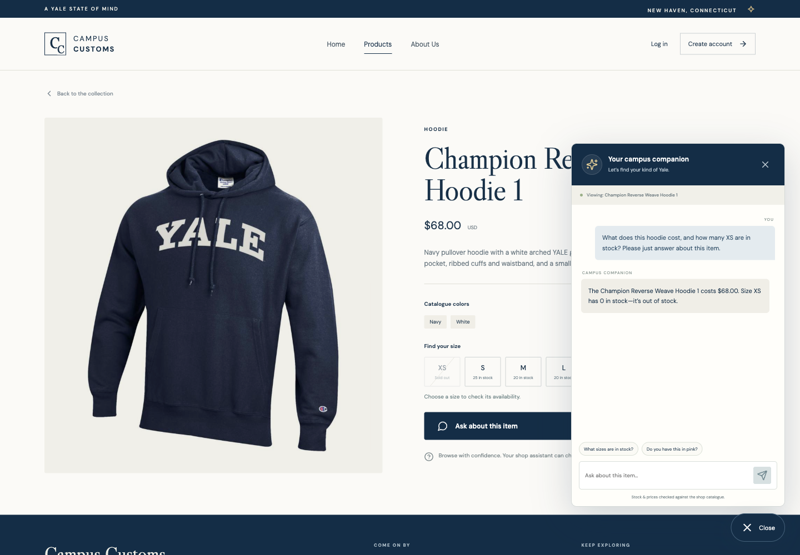
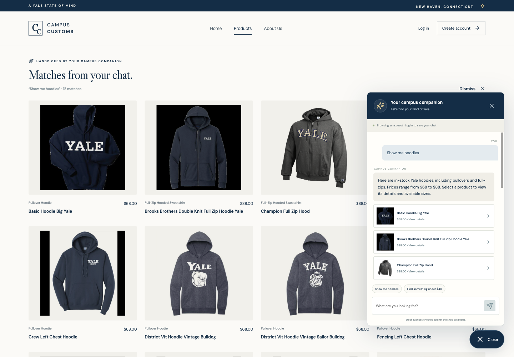
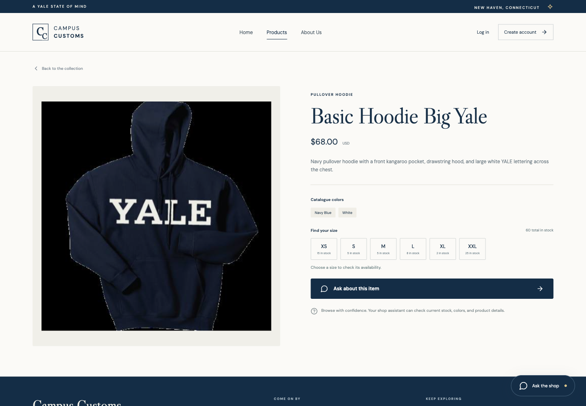
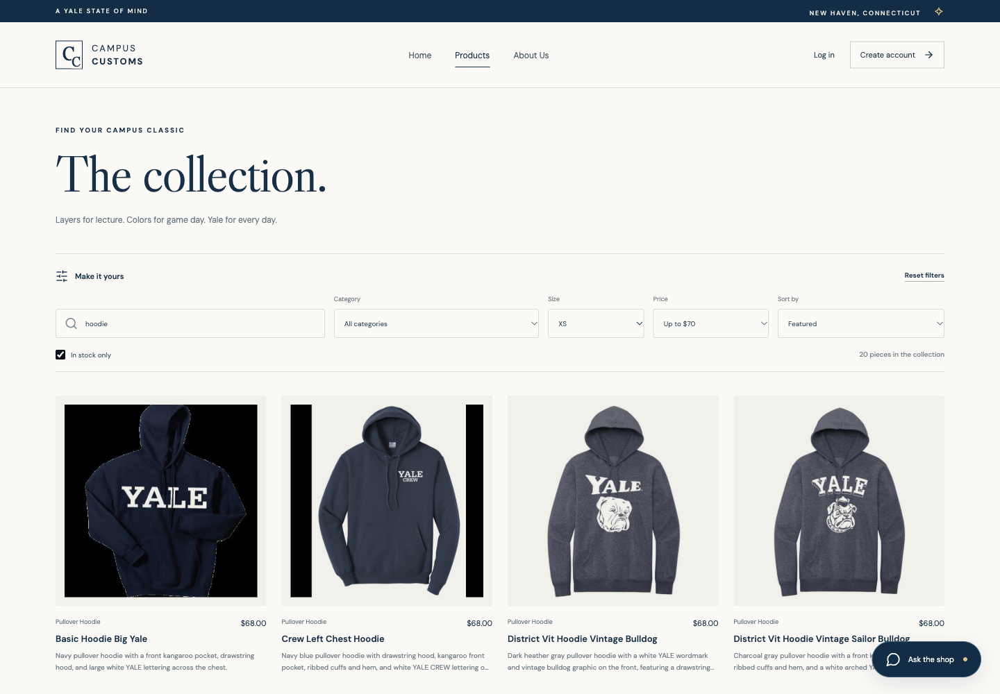
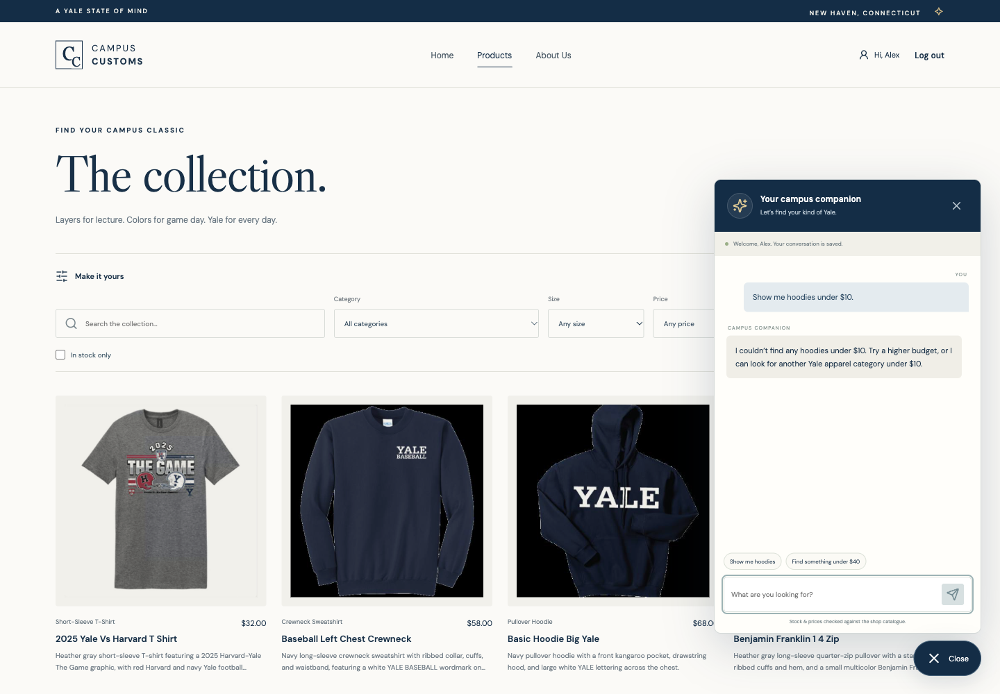
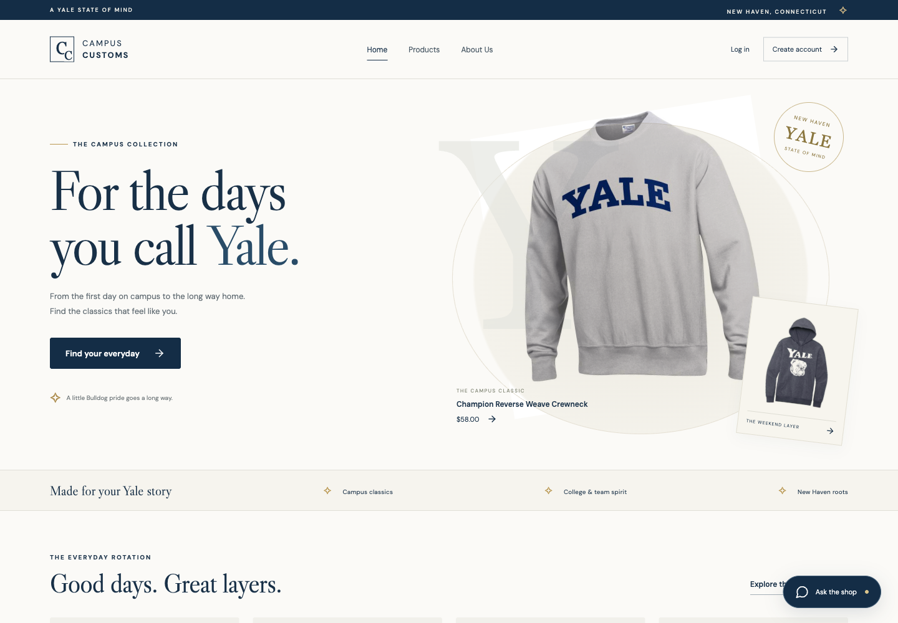
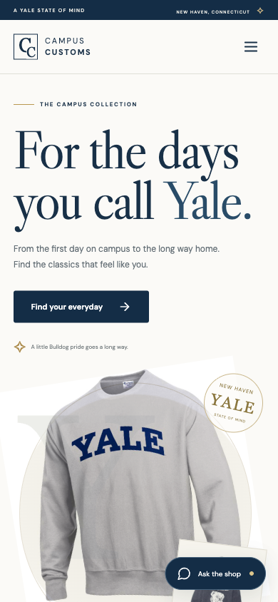

Tested October 3, 2026 at http://127.0.0.1:5173 with FastAPI on port 8000 and the real Portkey/PydanticAI agent. Screenshots are unedited browser captures; the original course SQLite catalogue and inventory supply the product facts.
1. Inventory lookup — price and out-of-stock size

The shopper asks about “this hoodie” while viewing Champion Reverse Weave Hoodie 1. The live assistant returns the database price of $68.00 and correctly states that XS has zero stock; the detail page also marks XS sold out.
2. Dynamic search cards after a category question

The “Show me hoodies” starter makes a real catalogue search. Twelve capped matches appear as image/name/price cards in the main page, including $68 pullovers and $88 full-zips; the answer and card references come from that run's SQLite tool results.

Clicking the first dynamically generated main-page card opens Basic Hoodie Big Yale's normal detail page. Its large image, full description, $68 price, and actual per-size quantities verify that the chat-to-detail handoff works.
3. Usability feature — budget, size, and availability filters

The implemented catalogue controls combine the hoodie query, size XS, price ceiling of $70, and “In stock only.” The page reports 20 matching pieces and offers a reset; unavailable XS items such as the Champion example are excluded.
4. New account and returning conversation

A new local test account was registered through the interface, logged out, and logged in again. Its own newly saved budget-search conversation reappears; the account name and saved-conversation label show that the server restored account-specific history.
5. Storefront and phone layout

The home page uses a navy/ivory visual identity and actual linked catalogue photos. The main navigation exposes the five required page destinations in the guest state.

The same storefront fits a 390-pixel phone viewport with a compact navigation control and floating chat entry. Independent phone checks also exercised size selection, contextual chat, Escape focus restoration, and logout without horizontal overflow.
The offline backend tests separately cover account/password handling, cross-user history isolation, parameterized queries, grounded product IDs, provider failures, and retained audit entries. Creating these local artifacts does not submit the assignment on Canvas.